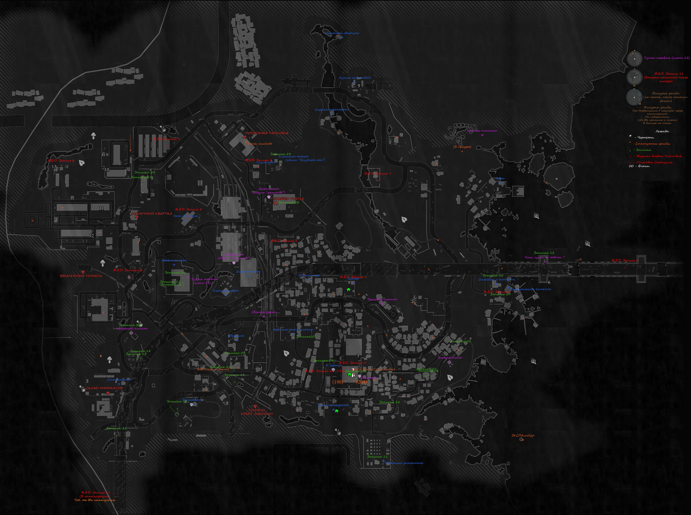
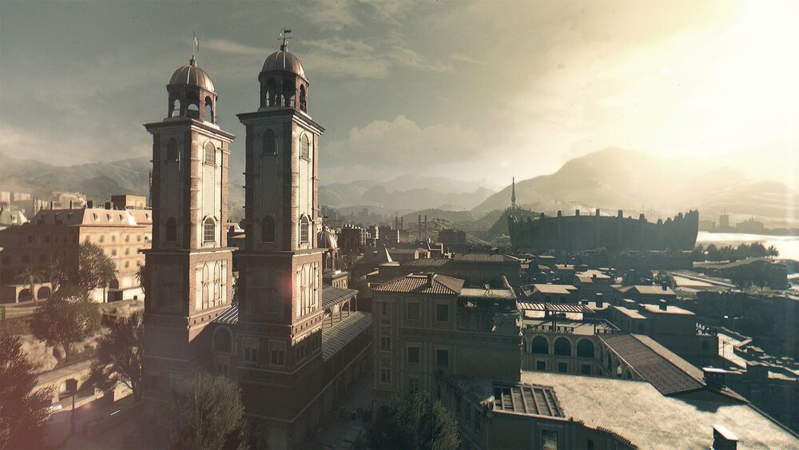
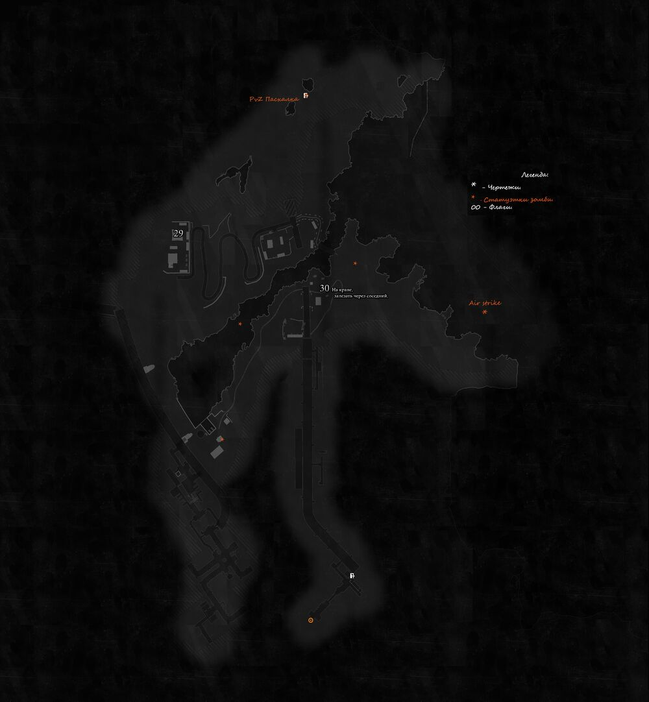

Локации
И ихние особености
Существует 3 типа локации - это Трущобы, Старый город и Антена. Сейчас я обо всех вам розкажу
Трущобы
Трущо́бы (англ. Slums) — это район города Харрана, в котором и берёт начало игра Dying Light. В данной местности действие игры происходит до выполнения миссии «Спасители» (в оригинальной версии игры). В трущобах достаточно много доступных для прохождения побочных заданий, что делает их отличным местом для развития и «прокачки» вашего персонажа. Также именно там мы впервые встретим таких необычных заражённых, как жаба и бомбардир.
Старый город
Ста́рый го́род (англ. Old Town), он же Се́ктор 0 (англ. Sector 0) — эпицентр эпидемии и один из районов Харрана. Имеет повышенный уровень опасности. Крейн попадает сюда из трущоб в ходе сюжетной главы «Спасители» и находится здесь практически до самого конца основной кампании.
До вспышки Старый город был процветающим районом для состоятельных граждан: это подтверждает его впечатляющая архитектура, разнообразие городских магазинов и заведений, а также наличие массивных соборов. По иронии судьбы именно этот богатый и престижный район Харрана оказался первым поражён харранским вирусом. В Старом городе можно наблюдать как заградительные стены, которые не помогли справиться с распространением инфекции, так и различные зоны карантина. Данный район находится в значительно лучшем состоянии, чем трущобы Харрана, которые, и до этого являясь неблагополучным районом, после эпидемии подверглись ещё большему разрушению.
Антена
Антенна (англ. Antenna) — третья локация в игре Dying Light, значительно уступающая по размерам первым двум.
Антенна выступает в качестве третьей локации в игре, но не имеет основного узла, как Башня в Трущобах. Тем не менее, размер карты очень мал, если сравнивать с Трущобами и Старым городом. Основное предназначение данного места — выполнение заданий «В эфире» и «Запуск». Также в данной местности присутствует чертёж «Удар с воздуха», как и пасхалка, отсылающая к игре Plants vs. Zombies. На данную локацию можно постоянно перезаходить и «фармить» флуоресцентные грибы и ядовитый лишайник. Антенна зачищается относительно быстро, если подходить к зомби сзади и убивать их по-тихому.
